개념과 사용 흐름
ZImage::load는 시그니처 기반 디코딩을 사용하고 save는 확장자로 인코더를 선택합니다. load_tiff_page는 0부터 시작하는 페이지를 읽습니다.
그림으로 이해하기


적용 상황과 원리
영상 입출력은 파일을 해독해 새 ZImage를 얻는 읽기와, 보이는 영상 픽셀을 선택된 파일 형식으로 인코딩하는 저장으로 나눕니다. 읽기는 파일 확장자를 신뢰하지 않고 내용의 서명을 이용해 디코더를 선택합니다. 반면 저장은 파일명 확장자로 인코더를 선택하므로 의도한 형식의 확장자를 명확히 지정해야 합니다.
결과를 읽는 방법
TIFF에 여러 페이지가 있을 때는 load_tiff_page에 0부터 시작하는 인덱스를 전달합니다. 첫 페이지가 0, 둘째가 1이며 없는 페이지는 오류입니다. 저장할 영상과 읽어 들인 영상은 각각 소유 객체입니다. Rust에서는 io 기능이 필요한 API이므로 빌드 설정을 확인하세요. 읽기 성공 후에는 결과의 크기와 픽셀 형식을 확인하고 다음 연산의 입력 조건에 맞는지 점검합니다.
추가 점검
읽은 영상의 원점과 크기는 후속 ROI 연산의 기준이 되므로 디코딩 직후 정보를 확인합니다. 저장한 파일이 존재한다는 것과 나중에 읽었을 때 기대한 픽셀 값이 남아 있다는 것은 다른 검증입니다. 사용 형식에 맞는 작은 왕복 사례를 준비하세요.
읽기와 쓰기
| 조건 | 확인할 내용 |
|---|---|
| 읽기 | 파일 서명으로 디코더 선택 |
| 쓰기 | 출력 경로의 확장자로 인코더 선택 |
| TIFF 페이지 | 0부터 시작하는 번호 지정 |